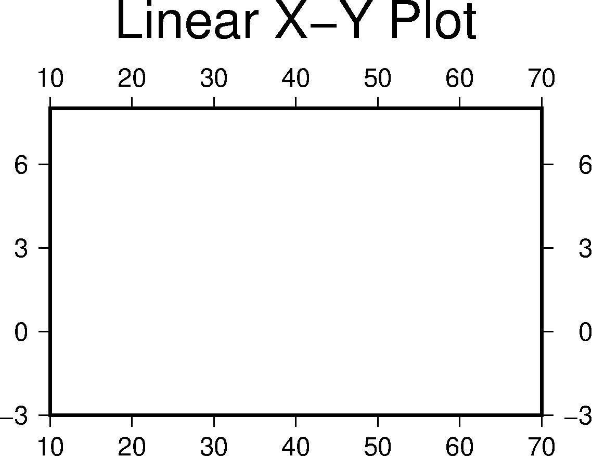
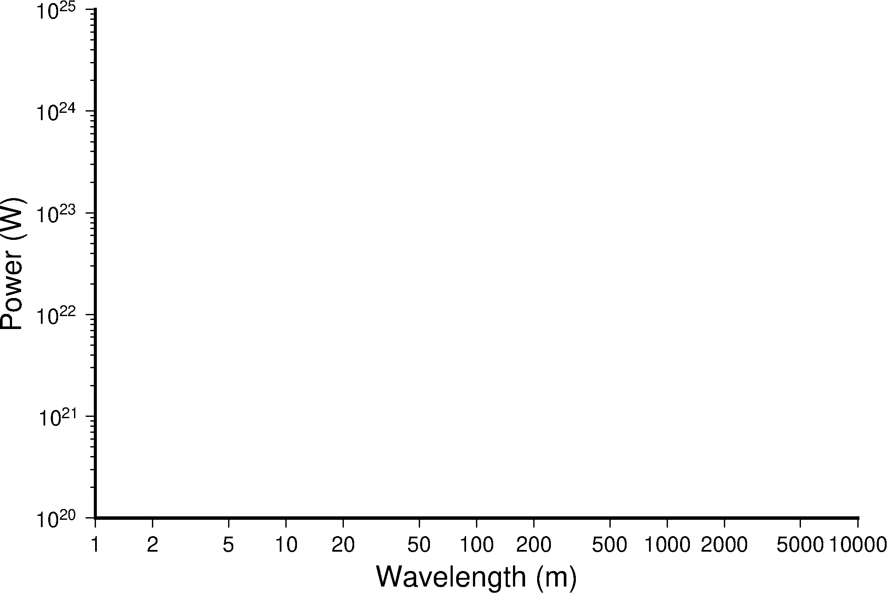
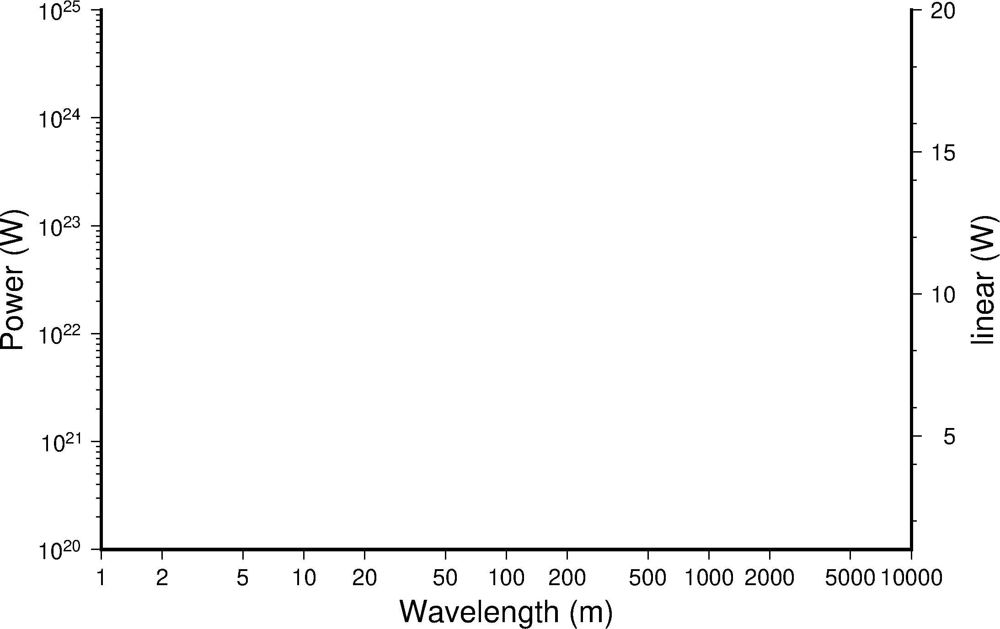
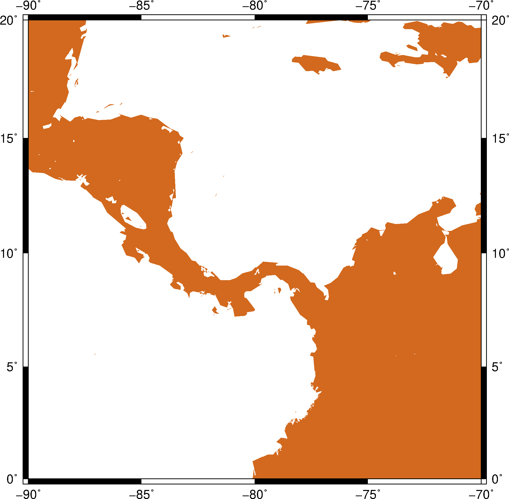
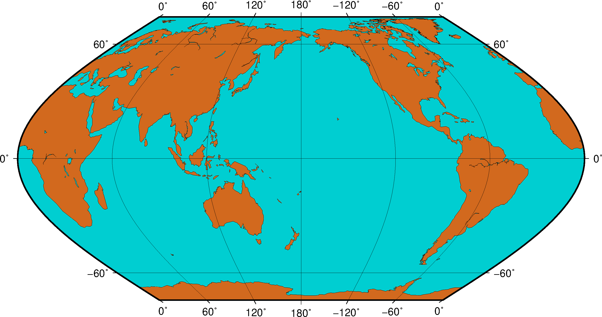

14.1 绘制底图¶
14.1.1 线性坐标系¶
GMT可以绘制最简单的线性X-Y图。
gmt psbasemap -R10/70/-3/8 -JX8c/5c -Bx10 -By3 -B+t"Linear X-Y Plot" > linearXY.ps

线性X-Y图
在这个示例中：
-R10/70/-3/8设置了X轴范围是10到70，Y轴范围为-3到8-JX8c/5c指定了整张图为线性投影，图的宽度（X轴长度）为8厘米，图的高度（Y轴长度）为5厘米-Bx10 -By3分别设置了X、Y轴标注以及刻度的间隔为10和3-B+t"Linear X-Y Plot"为整张图添加了标题> linearXY.psGMT绘图模块的输出是PS代码，因而需要使用重定向符号>将PS代码输出到PS文件中
14.1.2 对数坐标系¶
下面展示如何用GMT绘制对数X-Y图。
gmt psbasemap -R1/10000/1e20/1e25 -JX15cl/10cl -Bxa2+l"Wavelength (m)" \
-Bya1pf3+l"Power (W)" -BWS > logXY.ps

对数X-Y图
此示例中：
-R1/10000/1e20/1e25设置了X和Y轴的范围-JX15cl/10cl中l表明用对数轴表示-B选项中+l用于指定每个轴的轴标签-BWS表示只绘制图边框左（W）和下（S）边框
14.1.3 双Y轴坐标系¶
下面展示如何用GMT绘制双Y轴坐标系。
gmt psbasemap -R1/10000/1e20/1e25 -JX15cl/10cl -Bxa2+l"Wavelength (m)" \
-Bya1pf3+l"Power (W)" -BWS -K > doubleY.ps
# Y为指数坐标底图上的绘图操作
gmt psbasemap -R1/10000/1/20 -JX15cl/10c -Bya5f2+l"linear (W)" -BE -O >> doubleY.ps
# Y为线性坐标底图上的绘图操作

双Y轴图
此示例中：
- 第一句
gmt psbasemap绘制了指数Y轴坐标系底图 - 第二句
gmt psbasemap绘制了线性Y轴坐标系底图
14.1.4 区域地图¶
GMT自带了海岸线数据，通过 pscoast 模块可以直接调用。
gmt pscoast -R-90/-70/0/20 -JM6i -P -Ba -Gchocolate > regionalMap.ps

区域地图
此示例中使用 pscoast 绘制了拉丁美洲区域的海岸线。
-R-90/-70/0/20指定了地理区域的范围-JM6i表示使用墨卡托投影，地图的宽度为6英寸，高度由投影自动决定-Ba会根据地理范围以及图片大小自动计算出适合的标注和刻度间隔-Gchocolate将陆地区域填充颜色chocolate
pscoast 还有很多常用的选项：
-D选项海岸线数据的精度-G设置陆地区域的填充色-S设置海洋、湖泊区域的填充色-W绘制海岸线，并设置海岸线的画笔属性-N绘制政治边界-I绘制河流-L在图上绘制比例尺
14.1.5 全球地图¶
gmt pscoast -Rg -JK180/9i -Bag -Dc -A5000 -Gchocolate -SDarkTurquoise \
-Wthinnest > globalMap.ps

全球地图
此示例中：
-JK180/9i表明使用Eckert投影，地图中心位于经度180度，地图宽度为9英寸-Rg等效于-R0/360/-90/90即绘制全球区域